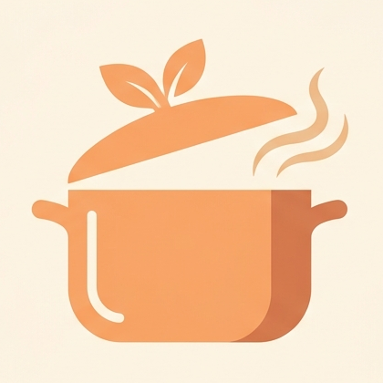

CukkaEffective date: November 9, 2026
Cukka is developed by Zabba Labs. This policy explains what data the app handles.
Cukka does not collect any personal data. It has no backend server, analytics, advertising SDKs, tracking cookies, or user accounts. All core features work offline, and the app goes online only in the two cases described under Network Use.
Cukka uses the internet in only two cases:
raw.githubusercontent.com).Like any web request, these providers receive standard request metadata such as your IP address. Cukka sends them no personal data, and the content you create is never uploaded.
All recipes, meal plans, shopping lists, and settings created in Cukka remain in the app's private local storage on your device. This data:
Cukka allows you to export your data (JSON backups or PDF recipe cards). Exported files are created locally and shared only through your device's native share sheet. Cukka does not upload them to external servers.
Cukka requests only these Android permissions:
Keeping the screen on during Cooking Mode needs no permission.
Cukka contains no in-app purchases, subscriptions, or paywalls.
Cukka does not collect any personal data from anyone, including children.
If this policy changes, updates will be published on this page with a revised date.
For questions about this policy, contact zbcdevo@gmail.com.